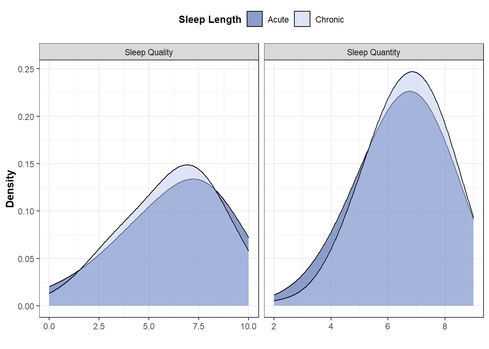
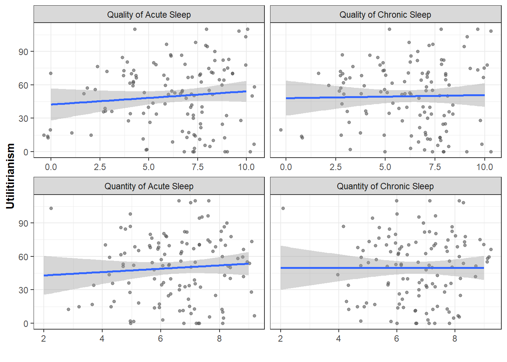
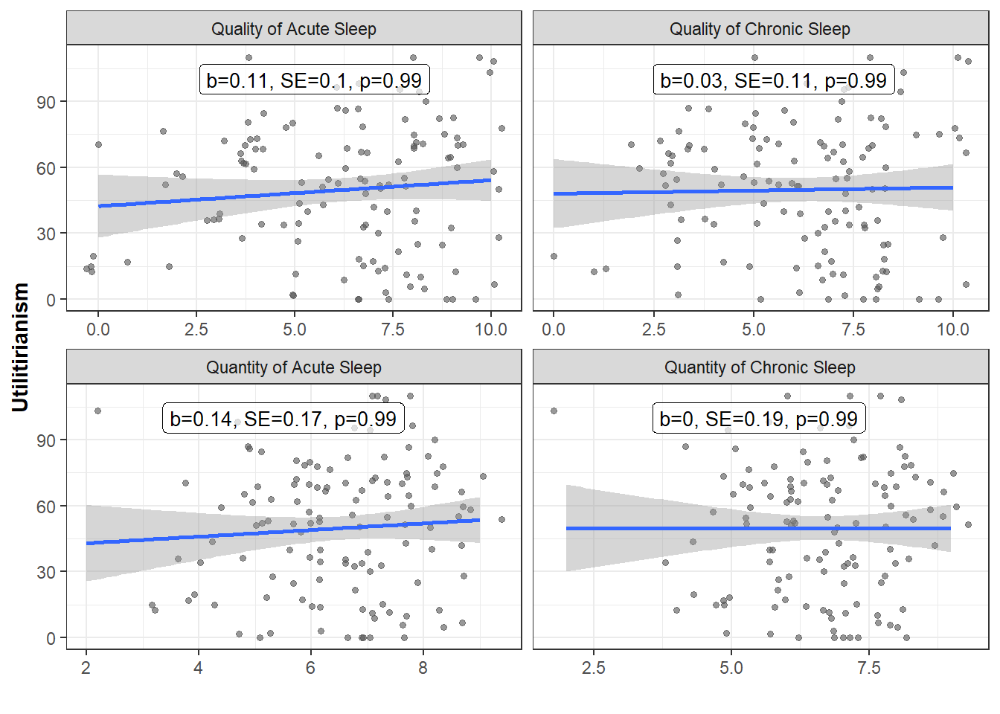

1 Study 1
Create a dataset with data from Study 1
Data_Study1_Wide<-Data_Study1_Raw %>% filter(CCA==1 & Attention_check==1)Transform the data in long format to run GEE
Data_Study1_Long<-Data_Study1_Wide %>%
pivot_longer(
c(
"Submarine_1",
"Trespassers_1",
"Hostages_1",
"Liferaft_1",
"PlaneCrash_1",
"PrisWar_1",
"Spelunkers_1",
"Soldier_1",
"Surgery_1",
"Footbridge_1",
"Cryingbaby_1"),
names_to = "Scenario", values_to = "Moral")
Data_Study1_Long$Trial<-rep(1:11, times=length(Data_Study1_Wide$Age))
1.1 Data analysis
Run Generalized Estimating Equations (GEE) for each sleep variable (IV) on moral judgments (DV)
GEE_SleepQualCroS1<-geeglm(Moral~SleepQualCro, family=gaussian, id=ResponseId, corstr="exchangeable", Data_Study1_Long)
GEE_SleepQualAcuS1<-geeglm(Moral~SleepQualAcu, family=gaussian, id=ResponseId, corstr="exchangeable", Data_Study1_Long)
GEE_SleepQuantCroS1<-geeglm(Moral~SleepQuantCro, family=gaussian, id=ResponseId, corstr="exchangeable", Data_Study1_Long)
GEE_SleepQuantAcuS1<-geeglm(Moral~SleepQuantAcu, family=gaussian, id=ResponseId, corstr="exchangeable", Data_Study1_Long)Extract coefficients (unstandardized slopes, standard errors and p-values) from GEE models
#Chronic Sleep Quality
bGEEQualCroS1<-round(summary(GEE_SleepQualCroS1)$coefficients[2,1], digit=2)
SEGEEQualCroS1<- round(summary(GEE_SleepQualCroS1)$coefficients[2,2] , digit=2)
pGEEQualCroS1<- round(ifelse(summary(GEE_SleepQualCroS1)$coefficients[2,4]*4<.99, summary(GEE_SleepQualCroS1)$coefficients[2,4]*4, .99), digit=2)
#Acute Sleep Quality
bGEEQualAcuS1<- round(summary(GEE_SleepQualAcuS1)$coefficients[2,1] , digit=2)
SEGEEQualAcuS1 <- round(summary(GEE_SleepQualAcuS1)$coefficients[2,2] , digit=2)
pGEEQualAcuS1<- round(ifelse(summary(GEE_SleepQualAcuS1)$coefficients[2,4]*4<.99, summary(GEE_SleepQualAcuS1)$coefficients[2,4]*4, .99), digit=2)
#Chronic Sleep Quantity
bGEEQuantCroS1<- round(summary(GEE_SleepQuantCroS1)$coefficients[2,1] , digit=2)
SEGEEQuantCroS1 <- round(summary(GEE_SleepQuantCroS1)$coefficients[2,2] , digit=2)
pGEEQuantCroS1<- round(ifelse(summary(GEE_SleepQuantCroS1)$coefficients[2,4]*4<.99, summary(GEE_SleepQuantCroS1)$coefficients[2,4]*4, .99), digit=2)
#Acute Sleep Quantity
bGEEQuantAcuS1<- round(summary(GEE_SleepQuantAcuS1)$coefficients[2,1] , digit=2)
SEGEEQuantAcuS1 <- round(summary(GEE_SleepQuantAcuS1)$coefficients[2,2] , digit=2)
pGEEQuantAcuS1<- round(ifelse(summary(GEE_SleepQuantAcuS1)$coefficients[2,4]*4<.99, summary(GEE_SleepQuantAcuS1)$coefficients[2,4]*4, .99), digit=2)Create datasets to display GEE summary in plots
ResumGEEQualCroS1<- paste0("b=",bGEEQualCroS1,", ", "SE=",SEGEEQualCroS1,", ","p=",pGEEQualCroS1)
ResumGEEQualAcuS1<- paste0("b=",bGEEQualAcuS1,", ", "SE=",SEGEEQualAcuS1,", ","p=",pGEEQualAcuS1)
ResumGEEQuantCroS1<- paste0("b=",bGEEQuantCroS1,", ", "SE=",SEGEEQuantCroS1,", ","p=",pGEEQuantCroS1)
ResumGEEQuantAcuS1<- paste0("b=",bGEEQuantAcuS1,", ", "SE=",SEGEEQuantAcuS1,", ","p=",pGEEQuantAcuS1)
annotationQualCroS1 <- data.frame(x = 5.5, y = 100, label = ResumGEEQualCroS1)
annotationQualAcuS1 <- data.frame(x = 5.5, y = 100, label = ResumGEEQualAcuS1)
annotationQuantCroS1 <- data.frame(x = 5.5, y = 100, label = ResumGEEQuantCroS1)
annotationQuantAcuS1 <- data.frame(x = 5.5, y = 100, label = ResumGEEQuantAcuS1)
annotationS1<-cbind(
rbind(annotationQualCroS1,
annotationQualAcuS1,
annotationQuantCroS1,
annotationQuantAcuS1),
SleepType=c(
"Quality of Chronic Sleep",
"Quality of Acute Sleep",
"Quantity of Chronic Sleep",
"Quantity of Acute Sleep"))
Prepare data for plots
Data_PlotS1<- Data_Study1_Wide %>%
pivot_longer(
cols=c(SleepQualCro, SleepQualAcu, SleepQuantCro, SleepQuantAcu),
names_to="SleepType") %>%
rename("SleepValue"=value) %>%
mutate(
SleepLength=case_when(
SleepType=="SleepQualCro" | SleepType=="SleepQuantCro"~"Chronic",
SleepType=="SleepQualAcu" | SleepType=="SleepQuantAcu"~"Acute"),
SleepQuanthist=case_when(
SleepType=="SleepQualCro" | SleepType=="SleepQualAcu"~"Sleep Quality",
SleepType=="SleepQuantCro" | SleepType=="SleepQuantAcu"~"Sleep Quantity"))
Data_PlotS1$SleepType<-dplyr::recode(Data_PlotS1$SleepType,
"SleepQualCro" = "Quality of Chronic Sleep",
"SleepQualAcu" = "Quality of Acute Sleep",
"SleepQuantCro" = "Quantity of Chronic Sleep",
"SleepQuantAcu" = "Quantity of Acute Sleep")1.2 Summary of Study 1 results
Put results in a table
SleepMarker<-c("Quality Chronic","Quality Acute","Quantity Chronic","Quantity Acute")
bGEES1<-c(bGEEQualCroS1,bGEEQualAcuS1,bGEEQuantCroS1,bGEEQuantAcuS1)
SEGEES1<-c(SEGEEQualCroS1,SEGEEQualAcuS1,SEGEEQuantCroS1,SEGEEQuantAcuS1)
pvalGEES1<-c(pGEEQualCroS1,pGEEQualAcuS1,pGEEQuantCroS1,pGEEQuantAcuS1)
NS1<-c(length(GEE_SleepQualCroS1$fitted.values)/11,
length(GEE_SleepQualAcuS1$fitted.values)/11,
length(GEE_SleepQuantCroS1$fitted.values)/11,
length(GEE_SleepQuantAcuS1$fitted.values)/11)
ResultsStudy1<-data.frame("Sleep Indicator"=SleepMarker, "Unstandardized Slope"=bGEES1, "Standard Errors"=SEGEES1, "p values"=pvalGEES1, "N"=NS1)
gt(ResultsStudy1)| Sleep.Indicator | Unstandardized.Slope | Standard.Errors | p.values | N |
|---|---|---|---|---|
| Quality Chronic | 0.03 | 0.11 | 0.99 | 122 |
| Quality Acute | 0.11 | 0.10 | 0.99 | 122 |
| Quantity Chronic | 0.00 | 0.19 | 0.99 | 122 |
| Quantity Acute | 0.14 | 0.17 | 0.99 | 122 |
1.3 Plot Study 1 results
Plot distribution for each sleep indicator
DistQualityS1<-ggplot(Data_PlotS1, aes(x=SleepValue, fill=SleepLength)) +
geom_density(alpha=0.5, size=0.5,adjust = 2) +
scale_fill_manual(values=c("#193B94", "#BDCAEE", "#193B94", "#BDCAEE")) +
theme_bw() +
ylab("Density") + xlab("") +
facet_wrap(~SleepQuanthist, scale="free_x") +
guides(fill=guide_legend("Sleep Length")) +
theme(
axis.title.y = element_text(size = 11, hjust = 0.5, face="bold"),
axis.title.x = element_text(face="bold", size = 11, hjust = 0.5),
legend.position="top",
legend.title = element_text(colour="black", size=10, face="bold"))
DistQualityS1
Plot distribution of the scores to the sacrificial dilemmas
DistMoralS1<-ggplot(Data_Study1_Raw, aes(x=Moral_DIL, fill="#193B94")) +
geom_density(alpha=0.5, size=0.5,adjust = 2) +
theme_bw() +
ylab("Density") + xlab("Sacrificial Dilemmas") +
guides(fill="none") +
theme(
axis.title.y = element_text(size = 11, hjust = 0.5, face="bold"),
axis.title.x = element_text(face="bold", size = 11, hjust = 0.5))
DistMoralS1
Scatterplots
ggplot(Data_PlotS1, aes(x=SleepValue, y=Moral_DIL)) +
geom_jitter(alpha=0.6, color="#545454", size=1.2) +
geom_smooth(method="lm") +
facet_wrap(~SleepType, nrow = 2, ncol = 2, scales="free_x") +
theme_bw() + ylab("Utilitirianism") + xlab("") +
theme(axis.title.y = element_text(size = 11, hjust = 0.5, face="bold"),
axis.title.x = element_text(face="bold", size = 11, hjust = 0.5)) +
guides(size=FALSE, colour=FALSE, fill=FALSE) +
geom_label(data=annotationS1, aes( x=x, y=y, label=label),
color="black", size=3.5 , angle=45, alpha=7/10, inherit.aes = FALSE)## `geom_smooth()` using formula 'y ~ x'